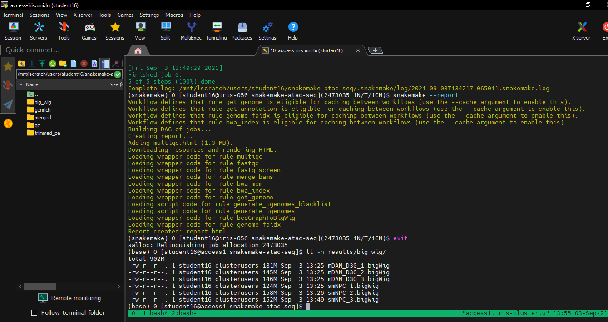

The workflow of all steps is summarised below:

and the template is hosted on the LCSB Gitlab
Singularity containers
Singularity allows to use containers (from i.e Docker) on High-Performance Computer. For more details see the lecture by HPC team
Shortly, a container with all the necessary tools, softwares and all libraries are embeded. Hence, you need to book the HPC resources but not install those softwares. Snakemake will load the container for every action it runs.
Book resources on iris
si is a shortcut for booking a short interactive session (30 minutes, 1 core).
But, we can alter the time for one hour with -t and ask for more cores with -c. Example below where we ask for 1 jour and 6 cores:
si -t 1:00:00 -c 6
Interactive sessions are limited to maximum 2 hours. See at the bottom how to submit passive jobs (max walltime: 48 hours).
(Optional) Reservations
Two nodes were reserved for this course. This will work if you have a student accounts or if you are part of the Department of Life Sciences. To access them you need to add the following parameter for Thursday:
si -t 1:0:0 -c 6 --reservation=aginolhac-teaching-20210902
and for Friday:
si -t 1:0:0 -c 6 --reservation=aginolhac-teaching-20210903
Install the snakemake template
We will work in the scratch partition.
- the alias to go there is:
cds
Type pwd to ensure you are in /scratch/users/username
- create the directory and go inside:
mkdir snakemake-chip-seq
cd snakemake-chip-seq
and run the following commands:
VERSION="v0.1.1"
wget -qO- https://gitlab.lcsb.uni.lu/aurelien.ginolhac/snakemake-chip-seq/-/archive/${VERSION}/snakemake-chip-seq-${VERSION}.tar.gz | tar xfz - --strip-components=1
this command will download, extract (without the root folder) the following files:
CHANGELOG.md
config/
Dockerfile
LICENSE
README.md
resources/
workflow/
You can check the list of files using ll (alias of long list: ls -l)
you may want to delete the LICENSE, Dockerfile, CHANGELOG.md and README.md if you wish,
they are not used by snakemake for runtime.
Fetch test datasets
Using the nextflow datasets, clone it using git:
git clone -b chipseq --depth 1 https://github.com/nf-core/test-datasets.git
Load necessary tools
- load
singularity
the command once on a node is:
(base) user@access module load tools/Singularity
- load the
snakemakeenvironment
(base) user@access $ conda activate snakemake
Of note, the 2 above steps can be replaced by the alias smk if you added the alias in your .bashrc
It should look like this from accessing the access machine to getting the resources and activating the environment:
(base) aginolhac@access1.iris-cluster.uni.lux(14:05:02)-> 20:56): ~ $ si -c 6 -t 1:00:00
# salloc -p interactive --qos debug -C batch
salloc: Pending job allocation 2424900
salloc: job 2424900 queued and waiting for resources
salloc: job 2424900 has been allocated resources
salloc: Granted job allocation 2424900
salloc: Waiting for resource configuration
salloc: Nodes iris-139 are ready for job
(base) aginolhac@iris-139(14:17:21)-> 29:51)(2424900 1N/T/1CN): ~ $ smk
(snakemake) aginolhac@iris-139(14:17:23)-> 29:49)(2424900 1N/T/1CN): ~ $
Test the workflow
Config files
3 tabulated separated values file (.tsv) defined where are the data and how to process them. They are all in the config folder.
Everything in the workflow contains the snakemake machinery and can be ignored if you are not interested into this.
units
This file has the key column in the first column, that must match the first colummn of samples.tsv.
unitare for technical replicates.fq1is the path the first pair ofFASTQor for single-end. In this last case,fq2needs to be empty.
The 2 last columns, sra_accession and platform are not going to be used (and are empty for sra_accession).
Display the content of config/units.tsv (using less config/units.tsv for example) it should look like:
sample unit fq1 fq2 sra_accession platform
Spt5_IN 1 test-datasets/testdata/SRR5204809_Spt5-ChIP_Input1_SacCer_ChIP-Seq_ss100k_R1.fastq.gz test-datasets/testdata/SRR5204809_Spt5-ChIP_Input1_SacCer_ChIP-Seq_ss100k_R2.fastq.gz ILLUMINA
Spt5_IN 2 test-datasets/testdata/SRR5204810_Spt5-ChIP_Input2_SacCer_ChIP-Seq_ss100k_R1.fastq.gz test-datasets/testdata/SRR5204810_Spt5-ChIP_Input2_SacCer_ChIP-Seq_ss100k_R2.fastq.gz ILLUMINA
Spt5 1 test-datasets/testdata/SRR5204807_Spt5-ChIP_IP1_SacCer_ChIP-Seq_ss100k_R1.fastq.gz test-datasets/testdata/SRR5204807_Spt5-ChIP_IP1_SacCer_ChIP-Seq_ss100k_R2.fastq.gz ILLUMINA
Spt5 2 test-datasets/testdata/SRR5204808_Spt5-ChIP_IP2_SacCer_ChIP-Seq_ss100k_R1.fastq.gz test-datasets/testdata/SRR5204808_Spt5-ChIP_IP2_SacCer_ChIP-Seq_ss100k_R2.fastq.gz ILLUMINA
samples
Now look at config/samples.tsv:
sample group batch_effect control antibody peak-analysis
Spt5_IN SptA batch1 Spt
Spt5 SptA batch1 Spt5_IN Spt narrow
sampleare ID that must match theunits.tsvsamplecolumn.groupare for biological replicate,batch_effectis self-explanatory.controlallows to specify which input has to be used. Leave it empty for input DNA sample.antibodyis for antobody or histone mark used.peak-analysiseithernarrow(for K4) orbroad(K27 or K36). This will be used when runningmacs2.
config
The file config.yaml contains the generic parameters for the analysis.
More specifically, it allows to specify the reference genome to use.
Here the section is designed for the yeast genome, that fits the test-data
resources:
ref:
# Ensembl species name
species: saccharomyces_cerevisiae
# Ensembl release
release: 101
# Genome build
build: R64-1-1
# for testing data a single chromosome can be selected (leave empty for a regular analysis)
chromosome:
# specify release version number of igenomes list to use (see https://github.com/nf-core/chipseq/releases), e.g. 1.2.2
igenomes_release: 1.2.2
# if igenomes.yaml cannot be used, a value for the mappable or effective genome size can be specified here, e.g. macs-gsize: 2.7e9
macs-gsize:
# if igenomes.yaml cannot be used, a path to an own blacklist can be specified here
blacklist:
This section will need to be updated when we use the real human data
Run the test-data workflow
- Check that your prompt is indicating that you are on a computing node, and with the snakemake environment loaded.
Something like that:
(snakemake) 0 [student20@iris-114 student20](2469485 1N/T/1CN)$
- Dry-run
snakemake -n
[Wed Sep 1 10:53:50 2021]
localrule all:
input: <TBD>
jobid: 0
resources: tmpdir=/tmp
Job stats:
job count min threads max threads
----------------- ------- ------------- -------------
all 1 1 1
generate_igenomes 1 1 1
get_gsize 1 1 1
total 3 1 1
This was a dry-run (flag -n). The order of jobs does not reflect the order of execution.
- Produce the Direct Acyclic Graph
With the alias, it is dag. You can then fetch and look at the dag.pdf. All jobs are with a plain line, meaning they are not done.
- Run the real workflow
snakemake --use-singularity --singularity-args "-B /scratch/users/aginolhac:/scratch/users/aginolhac" -j 6
First it download the singularity image (and will cache it). It takes a few minutes (feels long however).
Then you can see the workflow moving on. 107 jobs are scheduled.
Messages like
System has not been booted with systemd as init system (PID 1). Can't operate.
Failed to create bus connection: Host is down
can be ignored. The whole workflow takes ~ 15 minutes with 6 cores.
- Create the report
snakemake --report
You can now fetch both report.html and results/qc/multiqc/multiqc.html that summarise the run.
- DAG again
if you wish, regenerate the dag.pdf, the lines are now dashed.
Run on human data
Disclaimer: those sequence files are of human origin. You must not copy them except for this teaching exercise.
Cleanup test data
To avoid mingling with the test data results, remove results entirely, it will be created again with the human results.
rm -rf results resources/ref
Fetch sequencing data
Make sure you are in /scratch/users/username/snakemake-chip-seq/, then copy the 4 fastq files:
mkdir data
rsync -v /scratch/users/aginolhac/tmp/K7/data/*gz data/
Adapt config files
The machinery in workflow is agnostic of the data origin. However, we need to set-up that we use new files.
config, the human reference
Edit config/config.yaml
The following lines (lines 9-18) must be changed for the following ones:
resources:
ref:
# Ensembl species name
species: homo_sapiens
# Ensembl release
release: 101
# Genome build
build: GRCh38
# for testing data a single chromosome can be selected (leave empty for a regular analysis)
chromosome: 1
Meaning that we work with the human genome genome, and only the chromosome 1 (this can be changed later). This, for the sake of computation time.
To run the workflow with all genome, you remove the 1 and
samples
Edit config/samples.tsv
sample group batch_effect control antibody peak-analysis
K7_K27 K7 batch1 K7_IN K27Ac broad
K7_K36 K7 batch1 K7_IN K36me3 broad
K7_K4 K7 batch1 K7_IN K4me3 narrow
K7_IN K7 batch1 IN
All histone marks will use the INPUT sample as control. And K4me3 are narrow peaks and the rest are broad.
units
Edit config/units.tsv
sample unit fq1 fq2 sra_accession platform
K7_K27 1 data/C8MN9ACXX_K7-WT-H3K27Ac.fastq.gz ILLUMINA
K7_K36 1 data/C8MN9ACXX_K7-WT-H3K36me3.fastq.gz ILLUMINA
K7_K4 1 data/C8MN9ACXX_K7-WT-H3K4me3.fastq.gz ILLUMINA
K7_IN 1 data/C8MN9ACXX_K7-WT-I.fastq.gz ILLUMINA
fq2 is empty as this is a single-end run. And we don't have technical replicates so all unit as 1.
Run the workflow
makes sure to have resources booked for 2 hours:
si -c 6 -t 2:00:00
and loaded singularity and snakemake.
Set-up the cache
To avoid spending too much time fetching the same reference genome and indexing it for mapping, we will share our work for these parts.
export SNAKEMAKE_OUTPUT_CACHE=/scratch/users/aginolhac/snakecache
Dry-run
First a dry-run as we did before:
snakemake -j 6 -n
Run
If all correct, run the workflow with cache activated. Of note, my scratch is shared for fetching the databases of fastq_screen.
snakemake --use-singularity --singularity-args "-B /scratch/users/aginolhac:/scratch/users/aginolhac" --cache -j 6
The whole run should fit within the 2 hours walltime.
Report
Generate it using:
snakemake --report
Fetch data back on your computer
On MacOS and GNU/Linux, use scp or rsync.
On Windows, with MobaXterm, your files are displayed on the left part, on SFTP. Type /scratch/users/username like below:

The needed files are:
report.html
results/qc/multiqc/multiqc.html
results/bigwig/K7_IN.bigWig
results/bigwig/K7_K27.bigWig
results/bigwig/K7_K36.bigWig
results/bigwig/K7_K4.bigWig
results/macs2_callpeak/K7_K27-K7_IN.broad_peaks.broadPeak
results/macs2_callpeak/K7_K36-K7_IN.broad_peaks.broadPeak
results/macs2_callpeak/K7_K4-K7_IN.broad_peaks.narrowPeak
Submit passive jobs
It consists in two steps:
- create a file
launcher.shat the root of your snakemake that contains the following lines:
#!/bin/bash -l
#SBATCH -N 1
#SBATCH -J JOB_NAME
#SBATCH --mail-type=begin,end,fail
#SBATCH --mail-user=yours@mail.lu
#SBATCH --ntasks-per-node=1
#SBATCH --mem-per-cpu=4096
#SBATCH -c 12
#SBATCH --time=0-06:00:00
#SBATCH -p batch
module load tools/Singularity
conda activate snakemake
srun snakemake --use-singularity --singularity-args "-B /scratch/users/aginolhac:/scratch/users/aginolhac" -j 12
You need to update the JOB_NAME and your email address. You can also delete those 3 lines (line 3 to 5) if you are interested into this monitoring.
The duration (here 6 hours) and number of cores can be adapted to your needs.
- run the submission with
sbatch launcher.sh
your job will be queued and start whenever it's possible and according to the fairshare.
You can monitor your scheduling with squeue -la -u $USER
See also the HPC team tutorial.